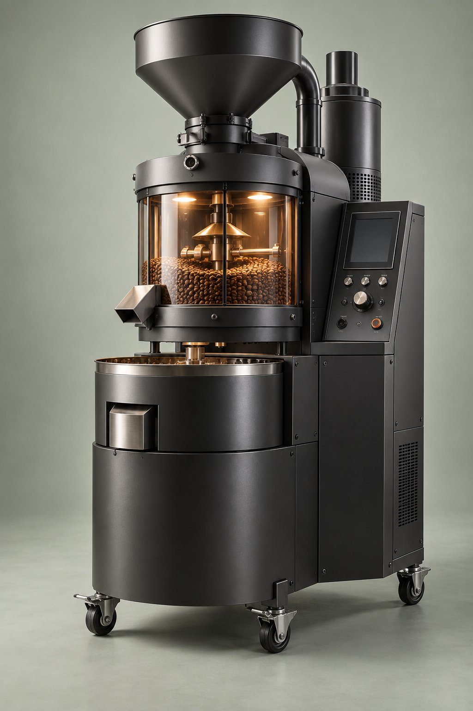

Adjustable Profiling
Develop the roast approach that suits the coffee and customer experience.
Operator-adjustable profiling, multiple roasting modes and published nominal capacity up to 6.8 pounds.

The Profect 4.0 gives operators control over profiles and selectable modes in a durable commercial build.
Develop the roast approach that suits the coffee and customer experience.
A larger published batch size for businesses with growing coffee volume.
Published features include odor reduction and particulate control with selectable steam injection.
The Profect has distinct three-phase power, water and ventilation needs. Engage qualified trades during planning.
*See the current official specification sheet and agreement for complete warranty terms.
Yes. Java Master’s published specification lists 125/208V three-phase power with neutral and ground. Confirm every site detail with Java Master and a licensed electrician.
The published nominal capacity is 6.8 pounds. Discuss your coffee type, roast profile and throughput needs during a consultation.
Java Master promotes installation and training as part of its program. Scope and site work must be defined in the final proposal.